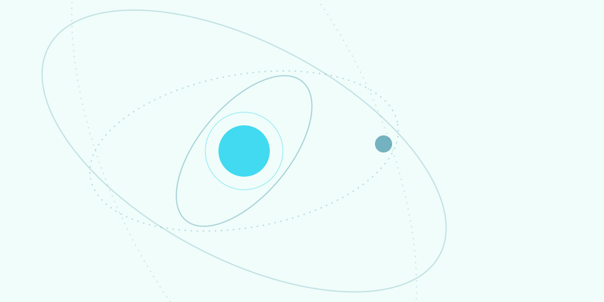

Rejuvenece tu rostro con un cirujano internacional en Cali
Rejuvenecimiento facial y de cuello, cirugía de párpados y rinoplastia con el respaldo y seguridad del Centro Médico Imbanaco.

Dr. Alfonso Riascos verified
Especialista SCCP & ISAPS
Respuesta directa por WhatsApp · Sin costo ni compromiso
¿Buscas rejuvenecimiento facial pero la web del doctor es un catálogo gigante sin casos ni precios claros?
Su web lista 20+ procedimientos pero el paciente que llega por rejuvenecimiento no ve antes/después junto al procedimiento ni un flujo de valoración: la decisión se posterga. Aquí va directo al punto.
Tu camino hacia tu valoración en 3 pasos
Escríbenos tu inquietud (ES o EN)
Cuéntanos tu objetivo estético por WhatsApp o formulario. Te atendemos fluidamente en español o inglés con absoluta reserva médica.
Valoración personalizada en Imbanaco
Consulta presencial en la sede de Imbanaco en Cali (o videoconsulta previa para pacientes fuera del Valle del Cauca y del exterior).
Plan quirúrgico con acompañamiento
Presupuesto cerrado sin sorpresas, programación en quirófanos acreditados JCI de Imbanaco y seguimiento postoperatorio riguroso y cercano.
Cirugía de alta precisión en Cali
Rejuvenecimiento facial y de cuello
Lifting cervicofacial de vectores naturales: reposicionamiento de planos profundos sin estigma quirúrgico ni aspecto estirado.
Cirugía de párpados y rinoplastia
Blefaroplastia para una mirada descansada y rinoplastia estética-funcional personalizada a la armonía de tus facciones.
Mommy Makeover y cirugía para hombres
Contorno corporal post-parto, lipoescultura anatómica de alta definición y protocolos específicos diseñados para la fisonomía masculina.
Resultados naturales en Imbanaco

«El Dr. Riascos me explicó el rejuvenecimiento paso a paso y la atención en Imbanaco fue de otro nivel. Cero incertidumbre y los resultados se ven completamente naturales.»
Programa tu cita con el Dr. Riascos
Completa tus datos para coordinar tu cita presencial en Cali o videoconsulta previa.